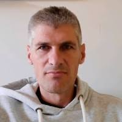
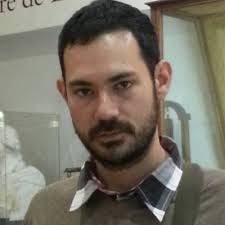
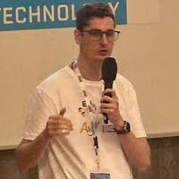
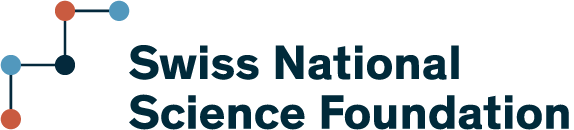
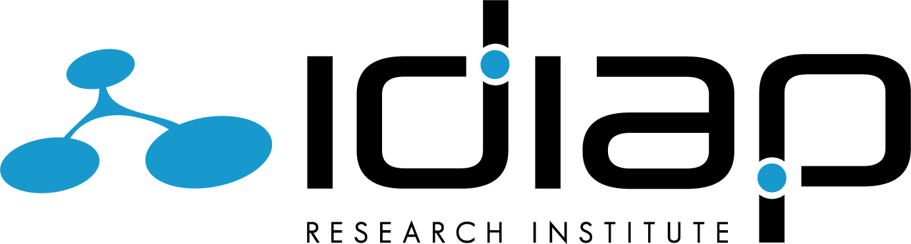
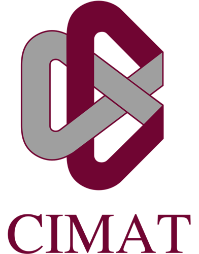

Advancing explainable, clinically-grounded AI tools that model language and behavioral markers of depression — bridging NLP research with psychiatric practice.
Depression, substance use disorders, anxiety, bipolar disorder and schizophrenia rank among the leading causes of disability worldwide. In Mexico alone, mental disorders occupy first place in years lived with disability at 14.92% prevalence — yet access to effective care remains critically limited.
ORIENTER investigates how patients’ language and behaviour can be modelled by AI techniques within the diagnostic construct of depression disorders, considering key demographic variables such as cultural background and gender. The project bridges NLP research with clinical psychiatry, ensuring that the resulting tools are explainable, trustworthy, and deployable in real healthcare settings.
Our approach combines sustainable AI, multimodal analysis, and deep clinical collaboration.
Knowledge-infused architectures that integrate structure and external expertise from psycholinguistics and psychiatry — reducing reliance on massive clinical datasets while improving explainability.
Exploiting both textual and acoustic modalities from clinical interviews to enrich model generalisation across demographic and cultural contexts.
All models and tools are evaluated hand-in-hand with psychiatric practitioners, ensuring clinical relevance, trust, robustness, fairness, and privacy compliance.
Domain-specific augmentation techniques tailored to the sensitive nature of mental health data, addressing the inherent scarcity of clinical corpora.
Models designed to surface interpretable insights — not black-box predictions — enabling clinicians to understand and trust the AI’s reasoning.
Outcomes targeted at low- and middle-income healthcare systems, where digital tools can bridge critical gaps in mental health services.
A cross-disciplinary team spanning NLP, psychiatry, and clinical psychology across Switzerland and Mexico.




Grant No. IZSTZ0_223488 · SPIRIT · ~CHF 500K

Speech & Audio Processing Group, Martigny, Switzerland
Mexico City, Mexico

Guanajuato, Mexico
Faculty of Communication, Culture & Society, Lugano, Switzerland
For collaboration inquiries, dataset access, or general questions.